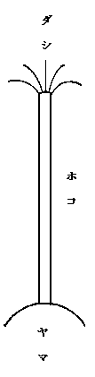

一
十三四年前、友人等と葛城山の方への旅行した時、牛滝から犬鳴山へ尾根伝ひの路に迷うて、紀州西河原と言ふ山村に下りて了ひ、はからずも一夜の宿を取つたことがある。其翌朝早く其処を立つて、一里ばかり田中の道を下りに、粉河寺の裏門に辿り着き、御堂を拝し畢つて表門を出ると、まづ目に着いたものがある。其日はちようど、祭りの
ごえん（後宴か御縁か）と言うて、まだ戸を閉ぢた家の多い町に、曳き捨てられた
だんじりの車の上に、大きな
髯籠が仰向けに据ゑられてある。長い髯の車にあまり地上に靡いてゐるのを、此は何かと道行く人に聞けば、祭りの
だんじりの竿の尖きに附ける飾りと言ふ事であつた。最早十余年を過ぎ記憶も漸く薄らがんとしてゐた処へ、いつぞや南方氏が書かれた目籠の話を拝見して、再此が目の前にちらつき出した。尾芝氏の柱松考（郷土研究三の一）もどうやら此に関聯した題目であるらしい。因つて、自分の此に就ての考へを、少し纏めて批判を願ひたいと思ふ。
髯籠の由来を説くに当つて、まづ考へるのは、
標山の事である。避雷針のなかつた時代には、何時何処に雷神が降るか判らなかつたと同じく、所謂
天降り着く神々に、自由自在に土地を占められては、如何に用心に用心を重ねても、何時神の
標めた山を犯して祟りを受けるか知れない。其故になるべくは、神々の
天降りに先だち、人里との交渉の尠い比較的狭少な地域で、さまで迷惑にならぬ土地を、神の標山と此方で勝手に極めて迎へ奉るのを、最完全な手段と昔の人は考へたらしい。即、標山は、恐怖と信仰との永い生活の後に、やつと案出した無邪気にして、而も敬虔なる避雷針であつたのである。勿論神様の方でも、さう／＼人間の思ふまゝになつて居られては威厳にも係ること故、中には
天ノ探女の類で、標山以外の地へ推して出られる神もあつたらうが、大体に於ては、まづ人民の希望に合し、彼らが用意した場所に於て、祭りを享けられたことであらう。
ちはやぶる神の社しなかりせば、春日の野辺に粟蒔かましを（万葉巻三）
と歌うた万葉集の歌の如きは、此標山を迷惑がつた時代の人の心持ちを、よく現してゐると思ふ。
さて、右の如く人民の迷惑も大ならず、且神慮にも
協ひさうな地が見たてられて後、第一に起るべき問題は、何を以て神案内の目標とするかと言ふことである。後世には、人作りの柱・旗竿なども発明せられたが、最初はやはり、標山中の最神の眼に触れさうな処、つまりどこか最天に近い処と言ふ事になつて、高山の喬木などに十目は集つたことゝ思ふ。此の如くして、松なり杉なり
真木なり、神々の依りますべき木が定つた上で、更に第二の問題が起る。即、其木が一本松・一本杉と言ふ様に注意を惹き易い場合はとにかく、さもないと折角標山を定めた為に、雷避けが雷招きになつて、思はぬ辺りに神の降臨を見ることになると困るから、茲に神にとつては
よりしろ、人間から言へば
をぎしろの必要は起るのである。
元来空漠散漫なる一面を有する神霊を、一所に集注せしめるのであるから、適当な
招代が無くては、神々の憑り給はぬはもとよりである。此理は、極々の下座の神でも同じことで、賀茂保憲が幼時に
式神が馬牛の偶像を得て依り来るを見たと言ふ話、更に人間の精霊でも瓜・茄子の背に乗つて、始めて一時の落着き場所を見出すと言ふなども、同じ思想に外ならぬ。神殿の鏡や仏壇の像、さては位牌・写真の末々に到るまで、成程人間の方の都合で設けた物には相違ないが、此が深い趣旨は、右の
依代の思想に在るのである。かの天の窟戸開きに糠戸神の苦心になつた八咫鏡を立てたといふのも、考へやうによつては不思議な話で、此を説明して語部の或者が、此様な、あなたよりも立派な神様がおいでになりますから、あなたを煩はさずともよろしいと、
皇神の反抗心を挑発する為に、御影を映す鏡を立てた様に言ふのも、必しも不自然な解釈とは言はれぬ。此も神器の絶対の尊厳を会得せしめん為に、皇神其自ら或は其以上との信仰を持たせようとしたものであらうと思ふ。
二
一昨年熊野巡りをした節、南牟婁郡神崎茶屋などの村の人の話を聞いたのに、お
浅間様・天王様・夷様など、何れも高い峯の松の頂に降られると言ふことで、其梢に
きりかけ（御幣）を
垂でゝ祭るとの話であつた。神の標山には必神の依るべき喬木があつて、而も其喬木には更に或
よりしろのあるのが必須の条件であるらしい。併しながら
依代は、何物でも唯神の眼を惹くものでさへあればよろしいといふわけには参るまい。人間の場合でも、髪・爪・衣服等、何かその肉体と関係ある物をまづ択び、已むを得ざれば其名を呼んだわけで、さてこそ、呪咀にも、
魂喚ひにも、此等のものが専ら用ゐられたのである。尤、素朴単純な信仰状態では、神の名を喚んだゞけで、其属性の或部分を人間が左右し得たので、神は即惹かれ依るものと信ぜられたのである。念仏宗などは、或点から見れば、実に羨ましい程、原始的な意義を貽してゐる。
今少し進んだ場合では、神々の姿を偶像に作り、此を
招代とする様になつた。今日の如き、写生万能の時代から遠い古代人の生活に於ては、勿論今少し直観的象徴風の肖像でも満足が出来た。仏教では、宇宙に遍満し給ふ
盧遮那仏をさへ具象せしめてゐるが、我古代人には、神も略人間と同じ様子を具へたまふものとの考へはあつたらうが、さて此を具象化する段には、譬へば十三臂ありとか、猪に乗るとか、火焔を負ふとか言ふ、一定の約束がない為に、却つて種々の疑問を起し易い所から、寧描写を避け、象徴に進んだ事と思ふ。だから仏像の輸入に刺戟せられ、思ひ切つて具象化した神像の中には、今日何神やら判然せぬものが多い。蓋し我古代生活に於て、最偉大なる信仰の対象は、やはり太陽神であつた。語部の物語には、種々な神々の種々な職掌の分化を伝へてゐるが、純乎たる太陽神崇拝の時代から、職掌分化の時代に至る迄には、或過程を頭に入れて考へねばなるまいと思ふ。勿論原始的な太陽神崇拝の時代でも、他の神々の信仰は無かつたと言ふのではない。唯、今少しく非分業的であつたと思ふのである。併し此赫奕たる太陽神も、単に大空に懸りいますとばかりでは、古代人の生活とは、霊的に交渉が乏しくなりやすい。故にまづ其象徴として神を作る必要が生じて来る。茲に自分は、太陽神の
形代製作に費された我祖先の苦心を語るべき機会に出遭つた。
まづ形代に就て、かねて考へてゐた所を言へば、一体人間の形代たる
撫物は、すぐさま川なり、辻なりに棄つべき筈なるに、保存して置いて
魔除け・
厄除けに用ゐるといふのは、一円合点の行かぬ話であるが、此には一朝一夕ならぬ思想流転の痕が認められるのである。神の形代に降魔の力あるは勿論であるが、転じては人の形代にも此神通力を附与するに至つた。其仔細を理解するには、形代に移されたる人の穢れ即悪分子は、
八十禍津日・
大禍津日化生の形代をさながらに、御霊的威力を振うて、災禍を喰ひ留めてくれると言ふ外に、尚古代人が実在の親しむべきを知ると共に、実在を超越する程度の高いものほど、怖しさの程度が加はると感じた根本観念を推測して見ねばならぬ。
実在する間は、人間の意のまゝに活殺し得べき動物が、一歩実在性を失ふや、忽ち盛んに人間を悩まし、或は未然を察知し、或は禍福を与奪する。又我々の属性の部分々々でも、抽象的なものほど恐怖の念を唆る傾向のあつたもので、分裂などゝ言へば事々しいが、我身よりあくがれ出づる魂の不随意的な行動を、自ら恐れることすらあつた。かの六条の
御息所の恐怖などは、啻に道徳上の責任を思つた為のみではなかつたので、寧、我魂魄に対する二元的の感情であつたかと思ふのである。
話が岐路に入つたが、立ち戻つて標山の事を言はう。標山系統の
だし・
だんじり又は
だいがくの類には、必中央に
経棒があつて、其末梢には更に何かの
依代を附けるのが本体かと思ふ。彼是記憶に遠い話よりは、自分に最因縁の深い今の大阪市南区
木津、元の西成郡木津村で、今から十年前まで盛んであつた
だいがくに就て話して見よう。
故老の言ひ伝へには、京祇園の
山鉾に似せて作つたと言ふが、此と同型の物の分布する地方は広く、五十年や百年以来の思ひつきとは認められぬ。まづ方一間高さ一間ばかりの木の

を縦横に貫いて
緯棒を組み、
経棒は此
の真中に上下に開いた穴に貫いて建てる。柱の長さは普通の電信柱の二倍もあらう。上には鉾と称へて、祇園会のと同じく円錐形の赤地の袋で山形を作つた下に、
ひげこと言うて径一丈余の車の輪のやうに

に数多の竹の
輻の放射したものに、
天幕を一重に又は二層に取り付け、其陰に祇園巴の紋の附いた守袋を下げ、更に其下に三尺程づゝ間を隔てゝ十数本の
緯棒を通し、赤・緑・紺・黄などにけば／＼しく彩つた無数の提灯を幾段にも掛け列ね、夜になると此に灯を点じて美しい。其又下は前に申した
であつて、立派な
縫箔をした
泥障をつけた、胴の高さ六尺余の太鼓を斜に柱にもたせかけ、膝頭までの揃ひの筒袖を着た男が、かはる／″＼登つて、鈴木
主水だの石井常右衛門だのゝ恋語りを、
やんれ節の文句其儘に歌ひ揚げるのである。
昨年五月三十日相州三崎へ行つた時、同地祭礼で波打際に子供の拵へた天王様が置いてあつたが、やはり
の穴に榊の枝幾本となく、門松などの様に挿してあるのが、所謂山の移り出た様で、
坐に故郷の昔の祭りが懐しく思ひ出された。木津では既に電線に障るとの理由で其柱も切られ、今では八阪社の
絵馬堂の柱となつて了うたのである。此又
と言ふ物が、横臼を曳き出したり、綱を敷いたり、さては粟殻を撒いて
早速の神座を作つたのと同様に、古代人の簡易生活を最鮮明に表示して居るので、漁師村などによく見掛ける地引網の綱を捲く台であつた様だ。小さい物では、大阪で祭りの提灯を立てる四つ脚の
なども、地を掘つて柱を建てぬのは、即昔の神座の面影を遺すものではあるまいかと思ふ。
三
さて此類の柱又は旗竿には、必其尖に神の依代とすべき或物品を附けたものである。木津の
だいがくなども、自分等が覚えてから、町によつては三日月・鎗・薙刀・神楽鈴・三本鎗・千成瓢箪など色々立てる様になつたが、依代の本体はやはり天幕に掩はれた髯籠であつた。此は、其頃あつた
若中（今は勿体らしく青年会）の
だいがく、並びに西成郡
勝間村・
粉浜村・中河内の
住道村などで以前出した物には、天幕も鉾もなく露出して居つて、柱の尖には榊などの束ねたのがあるばかり、最目につくのは、此
髯籠であつた。後世漸く本の
意が忘却せられ、更に他の依代を其上に加ふるに到つたのかと思ふ。
然らば其髯籠の本意は如何と言ふと、地祇・精霊或は一旦標山に招ぎ降した天神などこそ、地上に立てた所謂
一本薄（郷土研究二の四）、さては川戸のさゝら荻にも、
榊葉にも、
木綿しでにも、
樒の一つ花（一本花とも）の類にも惹かれよつたであらうが、青空のそきへより降り来る神に至つては、必何かの目標を要した筈である。尤後世になつては、地神の
よりしろをも木や柱の尖に結び附けたことはあつたが、古代人の考へとしては、雲路を通ふ神には、必或部分まで太陽神の素質が含まれて居たのであるから、今日遺つて居る髯籠の形こそ、最大昔の形に近いものであるかと思ふ。木津の故老などが
ひげことは日の子の意で、
日神の姿を写したものだと申し伝へて居るのは、民間語原説として軽々に看過する事が出来ぬ。其語原の当否はともかく、語原の説明を藉りて復活した前代生活の記憶には、大きな意味があるのかも知れぬ。
木津の
だいがくの
ひげこは、単に車の輪の様な形のものになつて居るが、
若中のもの其他村々所用の物では、いづれも轂より八方に幾本となく放射した
御祖師花（東京の
ふぢばな）の飾をかく称するのを見ると、後代紙花を棄て、輪を取りつけ天幕を吊りかけて、名のみを昔ながらに
髯籠と言ふのであらう。我々の眼には単なる目籠でも同じことの様に見えるが、以前は
髯籠の髯籠たる編み余しの髯が最重要であつたので、籠は日神を象り、髯は即後光を意味するものであると思ふ。十余年前粉河で見た
髯籠の形を思ひ浮べて見ても、其高く竿頭に靡くところ、昔の人に、日神の御姿を擬し得たと考へしむるに、十分であつたことが感ぜられる。
東京などで祭礼の日に
舁ぎ出す万燈の中には、簡単な御幣を竿頭に附けたものもあるが、是亦所謂御祖師花の類を
繖状に放射させたのが正しい元の形式であつたらう。池上会式の万燈には、雪の山かとばかり御祖師花を垂れたのをよく見受ける。中山太郎氏の談に依れば「ゑみぐさ」と言ふ書に見えた佐渡の
左義長の飾り物で、万燈同様に舁ぎ出し、海岸で焼却するものにも、同じ様に紙花を挿し
栄して居た。更に野州・上州に亘つて、大鳥毛を見る様に葬式の先頭に振りたてゝ、途すがらお
捻り銭を揺りこぼして行き、此を見物群衆の拾ふに任せる花籠と言ふものも、やはり此系統に属する物ではないかと思ふ。
要するに当初の単純な様式が一変して、後には髯籠の周囲に糸を廻らし、果は紙を張つて純然たる花傘となし、竹の余りに瓔珞風に花などを垂下せしむる等、次第に形式化し観念化し、今では殆ど何の事やら分らぬやうになつたのである。万燈などは割合に丈が低いが、最初、深山木の梢から、此を里の祭の竿の尖に移し始めた頃のものは、竿の高さも遥かに高かつた上に、髯籠の形式も純一であつたとすれば、此類の象徴は頗る鮮明に人の心に痕を印することが出来たらうと考へられる。
最近のものでは、
日ノ丸の国旗の竿の尖に、普通は赤い球などを附け、日は一つ影は三つの感があるが、稍大きな辻々などに立てる旗竿には、是亦目籠に金紙・銀紙などを張つてゐる。
五月幟の竿の頭にも、東京では此に似た目籠又は矢車などを附けるが、栃木地方の人の話では、あの辺では十数年前迄は髯籠を取り付けて居たと言ふ。此から更に想像の歩を進むれば、今日の鯉幟なども或は亦髯籠の一転化かも知れぬ。髯籠から吹貫き又は吹き流しへ、吹貫き吹流しから鯉幟へ、道筋を辿ることはさして困難ではない。吹貫きは単に目籠の下へ別に取り付けた所謂髯とも見得るのである。
次に言ふべきは、修験道の
梵天のことである。目籠と梵天との関係は、今の処まだ、何れが親何れが子とさう手軽には決し兼ねるが、二者の形似は確かに認めねばならぬ。唯目籠の単純なるに比して、梵天には更に御幣の要素をも具へて居るのである。京阪では
張籠のことを
ぼてと謂ふ。此はぼて／″＼と音がするから
ぼてと謂ふのか、と子供の時は考へてゐたが、此もどうやら梵天と関係がありさうだ。
我々上方育ちの者には、梵天と謂へば直ちに芝居の櫓などに立てた、床屋の耳掃除に似た頭の円く切り揃へられた物を聯想するが、関東・北国等の羽黒信仰の盛んな地方では必しも然らず、
ぼんてん即幣束の意に解して居り、其形状も愈削り掛け又は
いなうの進化したものゝ様に見えて参る。香取氏の梵天塚の話（郷土研究二の五）などを見ても、梵天・幣束・招代の三者の関係は直観し得るのである。
梵天に就ては後に今一度言ふべき折があるが、茲には唯張籠と梵天との語原的説明を介して、髯籠と梵天との関係を申した迄である。
ぼてと言ふ籠の名が擬声語でないことは他にも証拠がある。肥え太つた女などの白く塗り立てたのを
白ぼてなどゝ言ふが、此などは勿論音からではなく、梵天瓜の白いのを白梵天と言ふ処から、人にも譬へて用ゐたのであるらしいことを考へると、自ら命名の理由の外に在るべきを推測せしむるのである。
四
髯籠の
因に考ふべき問題は、武蔵野一帯の村々に行はれて居る
八日どう又は八日節供と言ふ行事である。二月と十二月の八日の日、前晩から
めかい（方形の目笊）を竿の先に高く揚げ、此夜
一つ眼と言ふ物の来るのを、かうしておくと眼の夥しいのに怖ぢて近づかぬと伝へてゐる。
南方氏の報告にも、外国で魑魅を威嚇する為に目籠を用ゐると言ふ事が見えてゐたが、其は恐らく兇神の邪視に対する睨み返しとも言ふべきもので、単純なる威嚇とは最初の意味が些し異つて居たのではないか。天つ神を喚び降す
依代の空高く揚げられてある処へ、横合からふと紛れ込む神も無いとは言はれぬ。
今日の稲荷下げの類でも、際限もなくあちこちの眷属殿が憑り来り、はては気まぐれの狸までが飛び入りをして、蒟蒻・油揚などを
しこたませしめて還る事もある。其程でなくても、通り神又は通り魔などゝ言ふ類もある。何れは人間でも、浮浪人は悪い事を犯し易い不安定状態に在る如く、
浮浪神も亦何時何処に割り込んで来て、神山を占めんとするやら計り難い故に、
旁太陽神の御像ならば、睨み返しも十分で安心と言ふ考へであつたかと思はれる。
勿論此迄到来するには、数次の思想変化があつたに相違ない。最初は単純に招代であつたのが、次には其片手間に
邪神を睨み返すことゝなり、果は
蘇民将来子孫とか、鎮西八郎宿とか言ふ様に英雄神の名に托して、高く空よりする者の寄り来るを予防した次第である。西川祐信画の絵本徒然草に、垣根に高く
樹てた竿の尖に鎌を掲げた図面があつた。余りに殺風景な為方とは思ふが、目籠と言ひ、鎌と言ひ、畢竟は一つである。
卯月八日の
てんたうばななども、釈尊誕生の法会とは交渉なく、日の
斎に
天道を祀るものなるべく「千早ふる卯月八日は吉日よ、かみさげ虫の成敗ぞする」と申す
まじなひ歌と相俟つて、意味の深い行事である。但、竿頭のさつきの花だけは、
花御堂にあやかつたものであつて、元はやはり髯籠系統のものであつたかと推測する。尚後の話の都合上此八日と言ふ日どりを御記憶願つておく。
日章旗の尖の飾玉などが、多くは金銀紙を
貼り、又は金箔などを附けて目籠の目を塞ぎ、或は木細工の刳り物などを用ゐて居るのは、元来此物が
をぎしろであつて、魔を嚇すが本意ではなかつたことを暗示し、即武蔵野の
目かいの由来談に裏切りするものである。殊に
八日日の天道花などに至つては、どう見ても魔の慴伏しさうなものでない。而もかくの如く全然当初の趣意が忘却せられるに至つても、所謂民俗記憶はいつまでも間歇的に復活し来り、屡此が
よりしろに用ゐられて居たのは偶然ではない様に思ふ。
さて、
招祭りの対象が神であれ
精霊であれ、依代の役目には変りがないとすれば、此間には何か前代人の遺した工夫の跡がある筈である。かく考へて注意して見ると、おもしろいのはかの盂蘭盆の
切籠燈籠である。此物の名の起りに就ては、柳亭種彦の還魂紙料あたりに突拍子な語原説明もあるが、切籠はやはり単純に切り籠で、籠の
最想化せられたものと言ふべく、盆の夕に家々で此を吊るのは、別に仏説に深い根拠のあることゝも思はれぬ。尤支那でも、盂蘭盆に火を焼き燈竿を樹てること、書物にも見えては居るが、所謂唐風の輸入には必在来のある傾向を契機としたもので、力強い無意識的模倣をするに至つた根柢には、一種国民の習癖ともいふべきものに投合する事実があつたのだ。併し、此も亦多くの例の一に外ならぬ。
盂蘭盆と大祓との関係の如きも亦此で、斉明朝の純然たる仏式模倣から、漸次に大祓思想の復活融合を来たしたやうに、習慣復活の勢力に圧されて、単純なる
供燈流燈の目的の外に、更に其上に精霊誘致の任務にも用ゐられた訣である。をこがましい申し分ではあるが、かの本地垂迹説を単に
山家・
南山の両大師あたりの政略であつた様に言ふ歴史家の見解は、
仮令結果が一に帰するにしても、心理的根拠から、我々の頗る不服とするところであつて、此事蹟の背後には、猶一段と熱烈にして且敬虔な民族的信仰の存するものを認めて貰ひたいのである。
されば、
高燈籠・折掛燈籠・切籠燈籠の類も、単に其起原を支那・天竺に覓めたゞけでは、必手の届かぬ痒い処が残るはずで、他の二種のものは
姑く言はず、切籠燈籠の如きは、到底其だけでは完全なる理会を望み難いのである。自分の考へを言ふならば、切籠燈籠のあの幾何学的構造は決して偶然の思ひ附きではあるまい。
如何なる時代に始つたかは知り難いが、盂蘭盆供燈に目籠の習慣を参酌して見て、そこに始めて起原の暗示を捉へ得る。即、右は全く髯籠の最観念化せられたもので、畢竟供養の形式に精霊誘致の古来の信仰を加味したもので、表は日本中は天竺と
国姓爺合戦の角書きの様な民俗に外ならぬ。精霊は地獄の釜を出ると其まゝ、目当ては此処と定めて、迷はず障らず、一路直ちに依り来る次第であるが、唯怖しいのは無縁の精霊である。其はまた応用自在なる我々の祖先は、此通り魔同様の浮浪者の為に、施餓鬼と言ふ儀式を準備して置いたものである。
此を要するに、切籠の
は髯籠の目を表し、垂れた紙は其髯の符号化したものである。地方によつては魂送りの節、三昧まで切籠共々精霊を誘ひ出で、此を墓前に掛けて帰る風もある。かの飯島お露の乳母が提げて来た牡丹燈籠なども亦此である。
話を再初めに戻して今一度
標山に就て述べて見たい。昔北野、荒見川の斎場から曳き出した標山などは、此神事に祭られ給ふべき天つ神を招ぎ依せるのが本意で、此を内裏へ引いて来るのは、寄り給ふ神々を導いて祭場まで御伴申すわけであつたが、此が一歩を転ずる時は途次の行列が第一になつて、鎮守さまへ行くのは、唯
山車や
地車などを産土神に見せまゐらせ、神慮を勇め奉る為だとする近世の祭礼の練りものゝ形式になるのである。
標山系統の練り物の類を通じて考へて見るに、天神は決して常住社殿の中に鎮坐在すものではなく、祭りの際には一旦他処に降臨あつて、其処よりそれ／″＼の社へ入り給ふもので、戻りも此と同様に、標山に乗つて一旦
天降りの
場に帰られ、其処より
天馳り給ふものと言はねばならぬ。神社を以て神の常在の地とするは勿論、神の依ります処とすることも、尠くとも天つ神の場合に於ては、我々の従ふこと能はざる見解である。
此に就ては、芸州
三原の祭礼に、神は山上より降り来り給ひ、祭りの間おはします家を神主に
憑つて宣らせ給ふと信ずる風習は、甚多くの暗示を含んでゐる。此即天つ神は地上にはいまさず、祭りの時に限つて迎へ奉ると言ふ消息を洩して居るもので無からうか。若し此信仰を認めぬとすると、各地の祭礼が必
宵祭りを伴うて居る風習を説明することがむづかしい。神が一旦他処に降り、其処から更に祭場に臨み給へばこそ、所謂
夜宮の必要はあるのである。此古くして忘れられたる信仰は、或は盂蘭盆の精霊の送迎の上に痕を留むる外に、尚ちらほらと各地に俤を残してゐる。
大和高市郡野口では村境に於て精霊の送迎をするさうである。前申す三原では三昧まで迎へに行き、精霊を負ふと称して後向きになり、負ふ様な手つきをして家まで帰ると言ふ話である。高天原と
黄泉ノ国と本貫異なる両者を混同する様に見えるか知らぬが、何れも要するに幽冥に属する方々たる点に、疑ひはないのである。
標山の観念化を経たものに更に
洲浜・
島台がある。洲浜のことは紫式部日記を初めとし、既に平安朝に於て尠からず見えて居る。島台となつてからも武家時代には盛んに用ゐられて居た様で、其極端なのはいつかの文部省展覧会の鏑木清方氏の吉野丸の絵に見えたもの、又は一九の詞書き朝麿画の「吉原年中行事」にも、月見の座に島台の描いてあるが如き、婚礼の席の外は殆ど此物を見る事のない今日の人の眼には、なる程異様にも映ずるか知らぬが、島台はもと／＼宴席であるによつて此を据ゑるので、而も宴席に島台乃至洲浜を置くのは、これ亦標山の形骸を留めるものである。信仰と日常生活と相離れること今日の如く甚しくなかつた昔に於ては、神のいます処を
晴の座席と考へてゐたことは、此を推測するに難くないのである。
五
日記物語類に見えた髯籠を列べ出す段になれば、いくらでもあるであらうが、要するに儀式の依代の用途が忘れられて供物容れとなり、転じては更に贈答の容れ物となつたのが、平安朝の貴族側に使はれた髯籠なので、此時代の物にも既に花籠やうの意味はあつたらしく思はれる。花籠なるものは、元来装飾と同時に容れ物を兼ねてゐる。此類から見れば、後世の花傘・
ふぢばなは遥かに装飾専門である。
さて此機会に、供物と容れ物との関係を物語る便宜を捉へさせて貰はう。私どもは供物の本義は依代に在ると信じてゐる。なるほど
大嘗祭は、四角な文字に登録せられた語部が物語に現れて来る、祭祀の最古い様式かも知れない。しかし我々を唆る中心興味の存する祭場の模様は、ある人々の考へてゐるやうに、此祭り特有のものではないらしい。
諸神殺戮の身代りとして殺した
生物を、当体の神の御覧に供へるといふ処に犠牲の本意があるのではなからうか、と此頃では考へてゐる。
人身御供を以て字面其儘に、供物と解することは勿論、食人風俗の存在してゐた証拠にすることは、高木氏のやうな極端に右の風習の存在を否定する者でない我々も、早計だとは信じてゐる。けれども殺すべき神を生しておいて、人なり動物なりを以て此に代へるといふことは、天梯立のとだえたことを示すもので、従来親愛と尊敬との極致を現して来た殺戮を、冒涜・残虐と考へ出したのは、抑既に神人交感の阻隔しはじめたからのことである。
大嘗祭に於ける神と人との境は、間一髪を容れない程なのにも係らず、単に神と神の
御裔なる人とが食膳を共にするに止まるといふのは、合点の行かぬ話である。此純化したお祭りを持つた迄には、語り
脱された長い多くの
祖たちの生活の連続が考へられねばならぬ。其はもつと神に近い感情発表の形式をもつてゐた時代である。今日お慈悲の牢獄に押籠められた神々は、神性を拡張する復活の喜びを失うて了はれたのである。
神の
在処と思はれる物が、神其物と考へられるのは珍らしいことではない。其物が小さければ小さい程、神性の充実したものと信ぜられて来るのは当然である。依代は固より、神性が神と考へられゝばこそ、舟・
・臼（横・挽）、
あいぬの
かむいせとが御神体として祀られる訣である。
まづ、供物を容れる器の観察から導いて来ねばならぬ。
折敷と行器とのくつゝいたやうな三方の類は大して古いものではなく、木葉や土の器に盛つて献らねばならぬ程の細かな物の外は、正式には、籠を用ゐたものでは無からうか。延喜式・神道五部書などに見えた
輿籠（又は
輦籠）は、疑ひもなく供へ物を盛つた器で、脚或は口を以て数へられる処から見ると、台の助けを俟たずに、
ぢかに据ゑることの出来るもので、而も
甕・
壺の様に蓋はなく、上に口をあいてゐたものと思はれる。
処が又、こゝに毛色の変つた一類の籠がある。其は
火袁理ノ命の
目無堅間・熊野大神の
八目荒籠・
秋山下冰壮夫の
形代を容れたといふ川島のいくみ竹の荒籠など
ぼつ／＼見えてゐるのが其で、どうやら供物容れが神の在処であつたことを暗示してゐる様である。
増穂残口などを驚かした、熊野の水葬礼に沈めた容れ物は、実は竹籠であつたのであらう。かうした場合に、流失を防ぐのに一番便利な籠は、口の締め括りの出来る髯籠であつた筈である。死人を装うて、鰐対治に入つて行かれた大神の乗物が、長く熊野に残つてゐたことは、物忘れせぬ田舎人の心を尊まずにはゐられない。
籠がほゞ神の在処なることが確かであり、同時に供物の容れ物となつてゐたことが、幸に誤でなければ、直ちに其に盛られた犠牲は供物である以前に、神格を以て考へられたことに、結着させてもよからうと思ふ。
百取りの
机代物を置き
足はす様になつたのは、遥かに国家組織の進んだ後の話で、元は移動神座なる髯籠が、一番古いものであつたと思はれる。一歩退いて考へて見ても、神の形代なる犠牲が向上すれば神となり、堕つれば供物となると考へることが出来る。其依代も無生物よりは、生き物を以てすることが出来たなら、尋常の形代よりも更に多くの効果を想像することが出来よう。
偖其容れ物なる籠も、時には形代なる観念の媒介を得て、神格を附与せられて依代となるので、粉河の髯籠・木津の
ひげこ、或は幟竿の先に附けられる籠玉は、此意味に於て、其原始的の用途を考へることが出来るので、かの大嘗会の
纛幡の竿頭の飾り物も、後世のは籠を
地として黒鳥毛を垂したものである。執念深い連絡は、こゝにも見られるではないか。供物の容れ物が贈り物の容れ物となることは、すぐ納得の行くことで、其が更に飾り物になる事もさのみ手数を要すまい。私の考へから言へば、大矢透氏が幣束は供物から出たものであるとばかり解せられたのも考へものである。たとひ後世の事実から帰納せられたとは言へ、やはり実験を土台とせられてゐた山中翁の幣束神体説は、依代の立場から見れば尚権威を失うてはゐない。
必、神の依代に奉つたのが最初で、漸く本意を忘れて、献る布の分量の殖えて来るに従うて、専らに布や麻を献上する為のものと考へ出すやうになつたのが、絵巻物の世界の幣束だつたのである。さすれば、同じ道筋を通る平安朝の髯籠が、供物の容れ物から、贈答の器になつたのも故のあることであるが、後には殆ど装飾物として用ゐられる様になつた。木の枝に髯籠をつるして、
鳥柴・
作枝と同様にさし上げて道行く人は、今日も絵巻物の上に見ることが出来る。
五月の邪気を祓うた
薬玉は、万葉びとさへ既に、
続命縷としての用途の外に、装飾といふ考へも混へてゐたのであるが、此飾り物も或は単に
古渡りの舶来品といふばかりでなく、髯籠の形が融合してゐるのではあるまいか。
六
面白いのは
宮ノ
祭りの有様である。後人の淫祠の様子が、しかつめらしい宮中に、著しく紛れ込んでゐたのである。其柱の下に立てかけられた竹の枝につけた
繖や男女の形代は、雛祭りが東風輸入であつたことの俤を遺して居ると同時に、此笹が
笠間神の依代である事を示すもので、枝に
下げられた繖は、こゝにも髯籠の存在を見せてゐるのである。此笹と同じ系統のものには七夕竹・精霊棚の竹、小にしては
十日戎の笹・妙義の繭玉・目黒の
御服の餅、其他東京近在の社寺から出る種々の
作枝は皆此依代で、同時に
霹靂木の用に供せられてゐるのである。
こゝで暫く
餅花の話に低徊することを許して貰はねばならぬ。正月の飾り物なる餅花・繭玉は、どうかすると春を待つ装飾と考へられてゐる様であるが、もと／＼素朴な鄙の手ぶりが、都会に入つて本意を失うたもので、実は一年間の農村行事を予め祝うた
にう木・
削掛の類で、更に古くは
祈年に神を招ぎ降す依代であつたものらしい。其でまづ近世では、十四日年越からは正月にかけて、飾るのを本体と見るべきであらう。
阪本氏の報告によると、信州上伊那辺の道祖神祭りに、竹を割いて拵へた柳の枝やうの物を配ると、其を受けた家々では輪なりにわがねて、家根に投げて置くさうである。此は形の上から見ても、一目に吉野
蔵王の
御服の餅花と一つものだと知れるが「ゑみくさ」に見えた佐渡の
ひげこのやうに、焼くことを主眼とするものと、さうした左義長風な意味を持たぬ餅花の類との間を行くもので、両方へ別れて行つた分岐点を記念するやうに見える。大きなものなら立て
栄すが、小さなものは家根に上げて置く外はない。五月の菖蒲も此である。七夕或は盆に屋上に上げられる草馬にも、同じ系統は辿られるのである。
此竹の輪の大きなので、屋の内に飾られたのは、餅花である。一体餅花と
くりすます・つりいとは非常に近い関係にあるものと見えるが、同じ信州松本地方の
ものづくり或は
名詮自性の
けやきのわかぎ、小田原で楢の木にならせる団子の木、岡市氏の報告せられた北河内の餅花（郷土研究三の一）などを見ると、愈其類似点が明らかになつて来る。
ものづくりといふ名は、簡易な祈年祭りの依代なる事を示してゐるのである。常陸国志に武蔵の繭玉が榎の枝で作られて、其年の月の数だけの枝ある木を用ゐるとあるを思ひ合せても、餅花・繭玉は農桑の豊作を祈るといふ習はしの通り、年占・祈年に神を迎へる為なる事は疑ひがない。小田原の団子の木が挽臼に立て掛けられるのも、依代と神座との関係を示してゐて面白い。繭玉系統の作り枝が社寺から出されるのは、依代に宿つた分霊を持ち帰つて祀る意味で、此点に於て削り掛け・
ほいたけ棒・粟穂・稲穂・
にはとこ・
幸木なども皆同種のもので、延いては酉の
市の熊手も、御服の餅花から
菖蒲団子と反対に向いて、大きくなつたものと思はれる。同じ時に売られる
五色餅を見ても、黙会せられる処がある。古今伝授の三木の一つなる、
めどにかけた
けづりばなが、
馬道にかけた削り花なることは、削り掛けの用途を知つてゐる人には疑ひがない筈である。其「花の木にあらざらめども咲きにけり」と言うたのは、削り掛けの一種に
接骨木や竹にさす削り花のある其らしく、同じ糸にたぐり寄せられる物には、楢の木の
殺ぎ口を丁字形に切りこんで
羊歯の葉を挿し、田端の
畦に立てられる紀伊熊野川沿岸の正月の立て物（名知らず）がある。古今集の歌は、かうした
榑や丸太に削り花の挿された物に、興味を持つて作つた
籠題だつたのであらう。
亀井戸の
鷽替への鷽は、形の上からすぐさま合点の行く様に、神前に供へられた削り掛けの依代を、奪ひ合ふ
年占の一種なのである。
桃の節供の雛壇のあたりに飾る因幡の餅花を見ても、儀式の依代であつたことは信じ易いであらう。自体、祈年祭りを二月四日に限るものゝ様に考へるのは、国学者一流の事大党ばかりの事で、農村では田畑の行事を始める小正月に取越して置くのが多く、又必しも正月十五日に限らず、大晦日・節分などを境目としてするものらしい。祇園の社頭に
にう木に似た削り掛けを立てるのは、大晦日の夜から元朝へかけての神事ではないか。一体大晦日と十四日年越しと節分とは、半月内外の遅速があるだけで、考へ方によつては一つ物と思はれる。年占・祈年・左義長・鳥追ひ・道祖神祭・厄落しは、
何の日に行うてもよいわけである。
とにかく竹を使ふにしても、自然木の枝を用ゐるにしてからが、皆多数の枝を要素としてゐることは、髯籠の髯と関係あるらしく、年々の月の数にこじつけたのは、素朴な
ぴたごらす宗の工夫の痕を示したのであらう。祇園の削り掛けの所謂
卯杖が十二本であるのは、枝沢山の削り花から、
にう木に歩みよる道すぢを示したのである。
平瀬麦雨氏の報告せられた信州松本の田植ゑの柳（郷土研究二の二）などもやはり此類で、傍標山の依代とも言ふ事が出来る。熊野新宮の対岸
神内では、年内から、墓場に花籠と称する髯籠を立てゝ、其には花の代りに餅をつけて、正月の墓飾りをする由である。此は
師走晦日に亡者を呼びよせた髯籠と、祈年の依代との融合したものゝ様に見えるが、茲にも多くの枝を要素としてゐる事が知れる。花無き頃の間に合ひの作り花の、立てがらを取り換へる手数の省ける処から、削り花・花籠・餅花などは、一年を通じて用ゐられる様になつたのである。
さて依代の立て場所に就て、話さねばならぬ機会に逢着した。屋内に飾る餅花は、家で一番表立つた場所に据ゑられるものであるが、元はやはり屋外に立てられたものが、取り込まれる様になつたので、こゝに到つて装飾の意味あひが、愈深くなつたのであらう。花の
塔・
天道花などの高く竿頭に聳えてゐるものから、屋上に上げられる菖蒲・竹の輪・草馬に到るまで、皆神或は精霊の所在を虚空に求めてゐるのである。中陰の内は、亡魂屋の棟を離れぬといふ考へも、又屋の棟をば精霊のより処とする信仰も、皆虚空に放散してゐる霊魂を、集注せしめる依代なる基礎観念があるからである。我々の祖先ばかりでなく、どうやら我々自身も「魄」の存在を認めてゐない事は、明言して差支へがないらしい。
七
ともあれ、山では自然の喬木、家では屋根・物干台、野原では塚或は築山などの上に、柱を樹てゝ、神の
標さしたものとするのであるが、尚其ばかりではうつかり見外される虞れのある処から、特別の工夫が積まれてゐるので、此処に
だしの話の
緒口はついたのである。
だしの「出し」である事は殆ど疑ひがない。但、神の為に出し置いて迎へるといふのか、物の中から抜け出させてゐるから
命けられたのかは少し明らかでない。徳島の端午に作る
やねこじき又は、
だしと言はれてゐる作り物は、江戸の
顔見世の
とうろうなる屋根飾りと同様に、屋上に出すもので、依代が竿頭から屋根に降りて来た時機を記念するものである。
今日浜松近傍でいふ
だしは、各地の祭礼・地蔵盆の作り物、大阪西横堀の作り物などゝ同じ物を謂ふので、此は既に屋内まで降りて居るのである。此は依代の本意を忘れると共に、大規模の作り物を立てるに足る広い平面を要したからである。
同類の変形は、大阪新町・江戸新吉原の
とうろうにも見られる。実際真の燈籠を見せるのではなくて、顔見世の
とうろうと同じく、盆燈籠の立つ頃に、衆人に公開した作り物に過ぎなかつたので、更に佐伯燈籠に到つては祭礼の渡御の前に行く人形であつた。名義の起りは稍古いところに在る。私は此を室町の頃から行はれた禁裡の燈籠拝見の忘れがたみと見るべきもので、恋・無常の差はあるが、本願寺の
籠花と同じ血脈を引いてゐて、等しく神・精霊に捧げた跡をあやからせる為に、公開したものと謂ふべきで、伊勢の
つと入りなどもかうした共産的な考へから出た風習と思ふのである。全体、
池坊の立花の始まりは、七夕祭りにあるらしい事は、江家次第の追儺の条を見ても明らかである。
さて、
長崎宮日に担ぎ出される傘鉾の頭の飾りを
だしものといひ、木津の
だいがくの柱頭のしるしを
だしと言うてゐるのは、今日なほ
山車の語原を手繰りよせる有力な手掛りである。手近い祇園御霊会細記などを見ても、江戸の末までも此
名所が世間には忘られてゐながら、山・鉾に縋り付いて、生き残つてゐた事が知れる。同書には「鉾頭、鉾の頂上なり、
だしなり」とか、或は
だし花などいふ名詞を書き残してゐる。
今出来るだけ古く
だしといふ
語をあさつて見ると、王朝の
いだし車には深い暗示が含まれてゐるが、此は後の事として、次に思ひ浮べられるのは、旗
指物の竿頭の飾りを
だしと言うたことである。嬉遊笑覧に引いた
雑兵物語の

の
だし・武者物語の鹿の角の
だしなどは、決して珍らしい事ではない。いろ／＼の旗指物図を見れば、到る処に此名所は散見してゐる。
例へば島原陣諸家指物図に、鍋島光茂の馬印を「大鳥毛・だし・金の瓢」と書いたのや、奥羽永慶軍記小田原攻めの条に出る岡見弾正の
酒林のさし物などを見ても知れる。尚笑覧に引いた、祐信の三つ物絵尽しの
謎の、端午の幟の
だしは五月幟の竿頭の飾りをも
だしと言うてゐた証拠である。
さて此様に、竿頭の依代から屋上の作り物、屋内の飾り人形或は旗竿尾の装飾にまで拡がつてゐる
だしの用語例は、直ちに、江戸の祭りの
山車の起原に導いてくれる。山王・神田の氏子の山車が、祇園の山鉾を似せたものだと謂はないまでも、本家・分家の間柄を思はせるだけの形似のあるのは事実である。
江戸では屋台全体の名であつた
だしが、京都・長崎・大阪木津などでは、尚部分の名称としてゐるのを見れば、聡明な読者にはどちらが末、どちらが本と言ふ考へが直様閃めいて来なければならぬ筈である。江戸の山車は旗竿の頭の飾り物が非常な発達をした為に、其儘全体の名となつたのであらうが、尾芝氏も言はれた通り、鉾と言ふ所から一々柱頭に剣を附添へた祇園の鉾も、元は柱の名に過ぎなかつたのである。さすれば、
山車・鉾・山の関係は、次の図に示す様なものである。此名称の分岐点は、各部分の特徴から分化して来たものなる事は、改めて説明する迄も無からう。室町時代に出来た
尺素往来に、既に鉾と山とが列べられてゐるところから見ると、此山或は鉾に同化せなかつた前の江戸の山車の原始的な形はどういふ物であつたらうか。私は今各地の祭りにふんだんに用ゐられてゐる
剣ぼこの類から、範囲を狭めては四神剣の観察をする必要があると思ふ。
百川の落語にひきあひに出る四神剣の、四神と剣とは、実は別物である。剣は普通の剣ぼこで、其と四神の違つてゐる点は、旗竿の頭の黒塗りの
折敷様のものに四神の像を据ゑてゐる点で、下にはいづれも錦の
幢を垂れてゐる。此が
の上に立てられる事の代りに、車の上に載せるやうになれば、竿頭の
だしなる四神像は、望見するに都合よく廓大する必要が起つて来るので、そこに四神像に止らず、祇園其他の作り物の模倣が割り込んで来る余地の出来た訣で、現に大正の大典に
輓かれた麻布末広神社の山車は、錦の日月幢を二丈余りの三段の
空柱の前面を蔽ふ程に垂れて、柱の末の
をしき様のものに、水干を着て御幣を持つた猿の作り物が据ゑてあつた。大体に山の手の山車は、老人の話を綜合すると、半蔵門を潜る必要上、下町の物よりは手軽な拵へであつたらしい。
此が下町の山車になると、柱の存在などは殆ど不明で、寧祇園の鉾に
近づいてゐるが、多くの物はやはり人形の後に小さく、日月幢を立てゝ俤を止めてゐる。此想像が幸に間違つてゐなければ、江戸の山車は旗竿の大きくなつて車に載せられたもので、所謂依代が勢力を逞しくしたものなのである。
諏訪の
御舟祭りの屋台は恐らく、
元三大師作と伝へる舟謡を残してゐるほど古い日吉山王の御舟祭りと同様、水上渡御の舟を移動神座なる
の上に据ゑたものらしく、舁くべき筈の物を輓く点と、依代なる人形の柱に関係のない点は他の祭屋台と違つた点であるが、江戸の山車が今日の四神同様
の上に立てられ、其に車をつける様になつたといふ道筋を教へるものではないだらうか。
祇園の方でも、名こそ違へ人形を飾る事は一つで、鉾や作り山が大きくなつた為に、
だしなる名称はとらなかつたが、畢竟同じ物でなければならない筈である。
さて長崎
宮日の傘鉾の
だしものは、田楽師の藺笠の飾り物乃至獅子舞・
手古舞の花笠と一つだといふと、不審を立てる人もあらうが、まづ聞いて貰ひたい。
祇園の傘鉾にも四条西洞院のものには、傘の上に花瓶を据ゑて、自然木の松と三本の赤幣束が挿してあり、綾小路や室町のものも傘の上の金鶏が卵を踏んでゐる後に、金幣が二本立てられてゐた。更に古く尺素往来の所謂
大舎人の
鵲鉾は実は異本にある笠鷺鉾の誤りであらうと言ふ事は、武蔵総社の田植ゑに出た傘鉾に
だしとして鷺の飾りの附けられてゐるのを見ても明らかである。
住吉踊りの傘鉾にも幣束の
だしの附いたのがほんとうで、今一度話す機会はあるが、踊りの中心となる柱が多く傘鉾で、其柄の端には、花なり偶像なりの依代を立てる必要がある。前に述べた田楽師がすばらしい花藺笠を
被くのも、元
よりましであつた事を暗示するものであらう。そゝり立つ柱なり竿なりの先の依代なる
だしは、いくら柱が小さくなつても、或は終に柱を失うて、とゞのつまり人の頭に載る様になつても、振り落されなかつたのである。
神を迎へる
だし行燈が、
宵宮から
御輿送りまで立てられたのは、最理窟に適うたことで、たゞ此を以て江戸の山車の起原と想像した
我衣の説は、成程笑覧の否定した様に、考へが狭過ぎる様だが、祭りが昼を主とする様になつてから、
だし行燈が装飾一遍となつたのは、大阪の祭提灯と同じ経路を辿つて来たものらしい。四尺許りの長提灯を貫いて、殆ど其三倍の長さの塗り物の竿が通つてゐて、其頭には鳥毛の代りに馬の尾か何かの白い毛を垂した、其上へ更に千成瓢箪・奔馬などの形の附いてゐるものである。其を宵宮には
担げて宮に参詣しては、新しい護符を貼りかへて貰つて帰つて来るのである。持ち帰ると家毎に表へ出してある、四方ころびになつた
四脚の台に立てゝ置いたのであるが、其用はやはり
神招ぎの依代として、
天降ります神の雲路を照すものなのである。